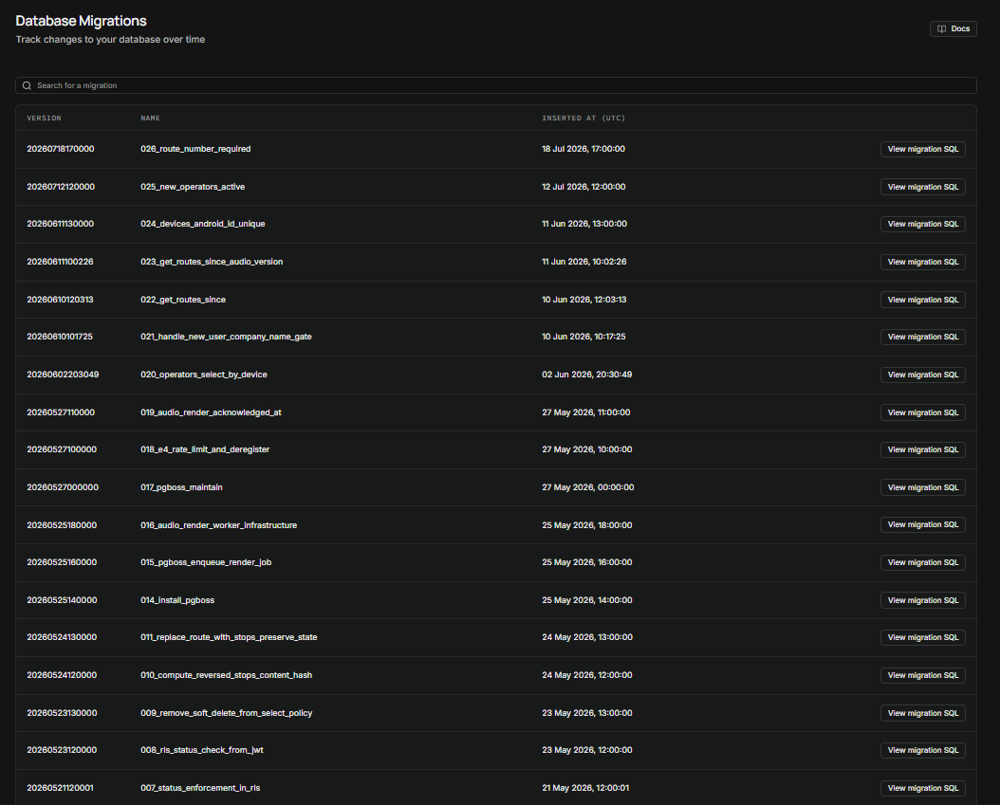
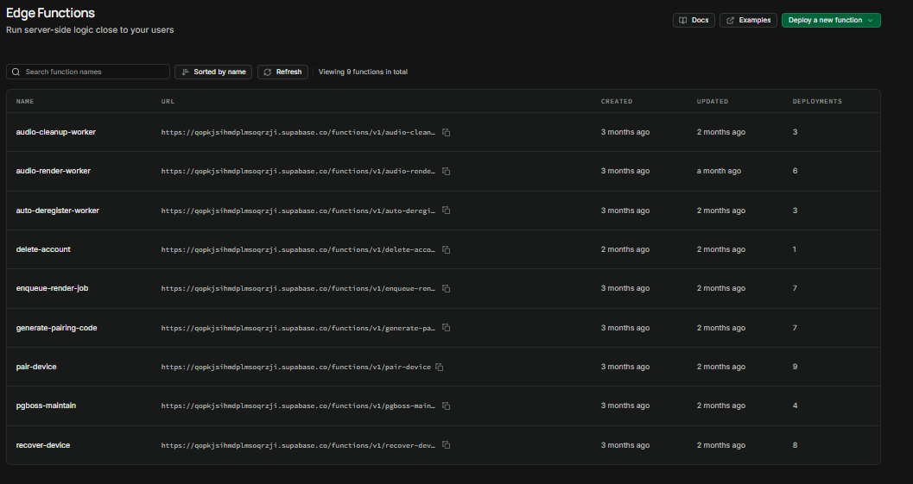
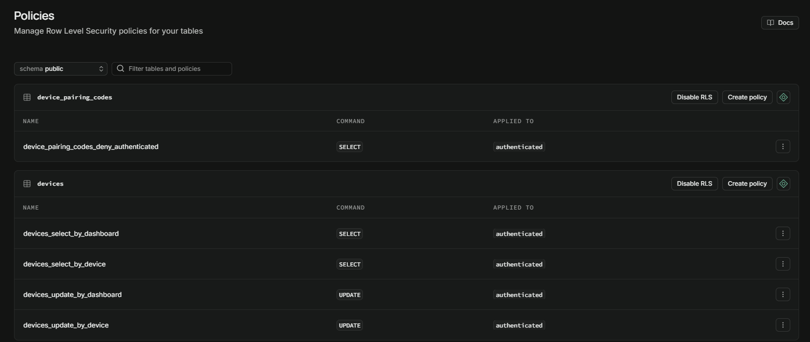
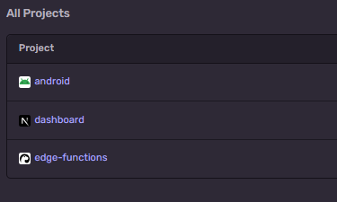

Case study
Passenger Display System
A legally-regulated passenger information system for UK rail-replacement buses — an Android tablet, an operator dashboard, and a shared Postgres backend. Built against The Public Service Vehicles (Accessible Information) Regulations 2023, deployed, and operated in production.
- Planned Mar–May 2026
- Built May–Jul 2026
- Ran in production
- Commercial track closed Jul 2026
- Since decommissioned
The regulations came first
Before any production code existed, the statutory instrument was mapped onto product requirements — 36 individual clauses across eight regulations, at sub-clause granularity, each one row in a five-column table.
Three things in that document matter more than the mapping itself.
It records what software cannot do
Every clause is classified Software, Operator or Hardware, and a separate 18-row boundary summary exists to support operator contracts and liability. The system provides a per-device audio toggle, but it cannot enforce one audio device per bus — it has no concept of a vehicle. That is written down rather than glossed over.
A legal threshold was measured, not assumed
Regulation 13(4) requires announcement audio to sit within 300–3000 Hz. Rather than assume the rendered speech complied, its spectrum was analysed — a Welch power-spectral-density estimate found 63.8% of total energy inside the required band, with the method and library versions recorded in the row itself.
It argues with itself, and loses
A quarter of the document is its own changelog — nine revisions across three adversarial review rounds. One entry records a row being rewritten to drop the dishonest claim that the software prevents overlapping multi-tablet audio. Finding that before the build is the entire point of doing it first.
What was built
The tablet (Kotlin, Compose, Hilt, Room) runs kiosk-mode, offline-first and GPS-driven. It detects stops by per-stop geofence with an accuracy gate and a temporal-hysteresis confirmation layer, plays pre-rendered audio, and drives a passenger display whose text is sized by physical measurement. It authors nothing and synthesises nothing — those concerns live elsewhere by design.
The dashboard (Next.js) is where operators author routes against the full UK stop database, manage a tablet fleet, and read journeys back. The backend (Supabase/Postgres) carries a pg_boss-queued render pipeline that synthesises every announcement server-side, and has been multi-tenant since its first migration, with operator scope carried as a JWT custom claim.
Four decisions worth defending
Announce on departure, not on arrival
Arrival at a stop arms the announcement; departure fires it. The obvious implementation announces the next stop when the bus reaches the current one — which tells passengers where they already are. Getting this right needed the regulation read for intent, not just for keywords.
The visual half is co-equal with the audio
A regulated announcement's screen flash and text overlay fire even on a tablet with audio disabled, because the law mandates a combined alert and does not exempt silent units. The flash therefore runs on its own timeline rather than being triggered by the chime — coupling them would have meant a silent tablet never flashed. It is an architectural invariant, not a UI preference.
Passenger text is 22 mm, physically
The regulation specifies millimetres, not pixels. Font size is derived from a cap-height fraction measured from the bundled typeface, against a screen calibrated by holding a bank card to it — because budget tablets misreport their own DPI. Long stop names scroll horizontally; they never shrink below the floor and never truncate.
Audit the deployed shape, don't trust the spec
A standing discipline: before building against any deployed function, RPC or schema, check what it actually is in production. It repeatedly caught real divergences — including an audio-path derivation defect where the specified mechanism would have produced paths that 404 against live data.
It ran in production
Not a prototype and not a localhost demo. It was deployed, monitored, and operated — which is the half of a project that is usually hardest to evidence after the fact.




Compliance-critical arithmetic was deliberately isolated into pure, unit-tested helpers — text sizing, layout-tier degradation, the volume floor, PIN lockout backoff — so the rules that carry legal weight could be tested without a device attached. Anything touching announcements, GPS or the passenger display was then verified on real hardware before it counted as done.
Why it closed
The opening was real: new accessibility regulations were about to compel passenger information systems onto fleets, and the market offered integrated hardware at roughly £5,000 a vehicle. Selling the software alone, on operators' own off-the-shelf tablets, undercut that substantially.
By the time it was finished, the prospective first customer had committed their compliance budget to the premium integrated option — and the reason mattered more than the loss. Operators treating compliance as a capital purchase were not price-shopping at all, and the ones who would have been were too price-sensitive to build a business on. The commercial track was closed in July 2026.
The engineering did not fail. The distribution did.
The record
The planning repository is public: the compliance matrix, the frozen requirements and data architecture documents, a 45-entry decision ledger, and 38 dated session records covering what changed, what was decided, and what was verified on hardware.
- github.com/oliverjhj/pds-planning — the full record
- The compliance mapping matrix — the artefact to read first
Place names and route numbers throughout the repository are fictional. The pilot was a personal contact at a bus operator, and their commercial data was replaced with a fictional operator and removed from the repository's history before publication.